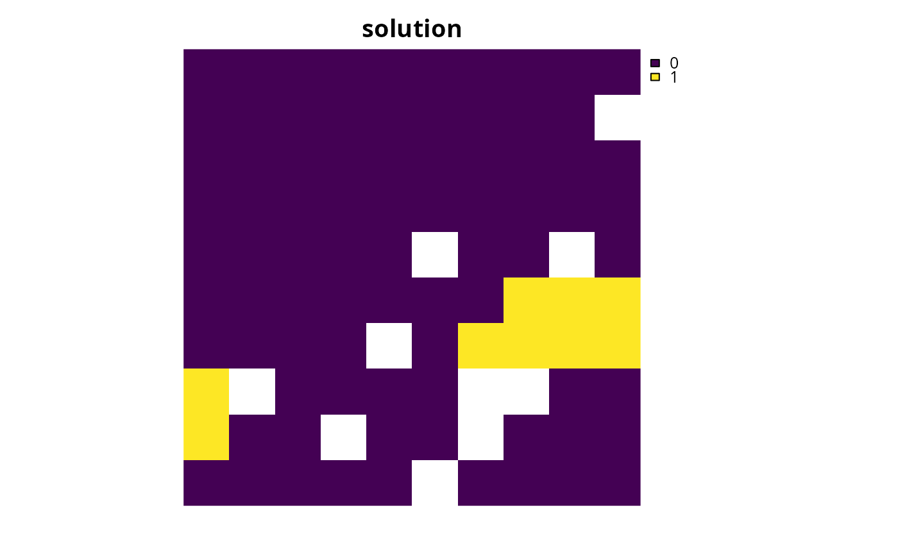

Add maximum phylogenetic endemism objective
Source:R/add_max_phylo_end_objective.R
add_max_phylo_end_objective.RdSet the objective of a conservation planning problem to
maximize the phylogenetic endemism of the features represented in the
solution subject to a budget. This objective is similar to
add_max_phylo_div_objective() except
that emphasis is placed on representing species with geographically
restricted evolutionary histories, instead representing as much evolutionary
history as possible. This function was inspired by Faith (1992),
Rodrigues et al. (2002), and Rosauer et al. (2009).
Arguments
- x
problem()object.- budget
numericvalue specifying the maximum expenditure of the prioritization. For problems with multiple zones, the argument tobudgetcan be (i) a singlenumericvalue to specify a single budget for the entire solution or (ii) anumericvector to specify a separate budget for each management zone.- tree
ape::phylo()object specifying a phylogenetic tree for the conservation features.
Value
An updated problem() object with the objective added to it.
Details
The maximum phylogenetic endemism objective finds the set of
planning units that meets representation targets for a phylogenetic tree
while staying within a fixed budget. If multiple solutions can meet all
targets while staying within budget, the cheapest solution is chosen.
Note that this objective is similar to the maximum
features objective (add_max_features_objective()) in that it
allows for both a budget and targets to be set for each feature. However,
unlike the maximum feature objective, the aim of this objective is to
maximize the total phylogenetic endemism of the targets met in the
solution, so if multiple targets are provided for a single feature, the
problem will only need to meet a single target for that feature
for the phylogenetic benefit for that feature to be counted when
calculating the phylogenetic endemism of the solution. In other words,
for multi-zone problems, this objective does not aim to maximize the
phylogenetic endemism in each zone, but rather this objective
aims to maximize the phylogenetic endemism of targets that can be met
through allocating planning units to any of the different zones in a
problem. This can be useful for problems where targets pertain to the total
amount held for each feature across multiple zones. For example,
each feature might have a non-zero amount of suitable habitat in each
planning unit when the planning units are assigned to a (i) not restored,
(ii) partially restored, or (iii) completely restored management zone.
Here each target corresponds to a single feature and can be met through
the total amount of habitat in planning units present to the three
zones.
Mathematical formulation
This objective can be expressed mathematically for a set of planning units (\(I\) indexed by \(i\)) and a set of features (\(J\) indexed by \(j\)) as:
$$\mathit{Maximize} \space \sum_{i = 1}^{I} -s \space c_i \space x_i + \sum_{j = 1}^{J} m_b l_b \frac{1}{a_b} \\ \mathit{subject \space to} \\ \sum_{i = 1}^{I} x_i r_{ij} \geq y_j t_j \forall j \in J \\ m_b \leq y_j \forall j \in T(b) \\ \sum_{i = 1}^{I} x_i c_i \leq B$$
Here, \(x_i\) is the decisions variable (e.g., specifying whether planning unit \(i\) has been selected (1) or not (0)), \(r_{ij}\) is the amount of feature \(j\) in planning unit \(i\), \(t_j\) is the representation target for feature \(j\), \(y_j\) indicates if the solution has meet the target \(t_j\) for feature \(j\). Additionally, \(T\) represents a phylogenetic tree containing features \(j\) and has the branches \(b\) associated within lengths \(l_b\). Each branch \(b \in B\) is associated with a total amount \(a_b\) indicating the total geographic extent or amount of habitat. The \(a_b\) variable for a given branch is calculated by summing the \(r_{ij}\) data for all features \(j \in J\) that are associated with the branch. The binary variable \(m_b\) denotes if at least one feature associated with the branch \(b\) has met its representation as indicated by \(y_j\). For brevity, we denote the features \(j\) associated with branch \(b\) using \(T(b)\). Finally, \(B\) is the budget allocated for the solution, \(c_i\) is the cost of planning unit \(i\), and \(s\) is a scaling factor used to shrink the costs so that the problem will return a cheapest solution when there are multiple solutions that represent the same amount of all features within the budget.
References
Faith DP (1992) Conservation evaluation and phylogenetic diversity. Biological Conservation, 61: 1–10.
Rodrigues ASL and Gaston KJ (2002) Maximising phylogenetic diversity in the selection of networks of conservation areas. Biological Conservation, 105: 103–111.
Rosauer D, Laffan SW, Crisp, MD, Donnellan SC and Cook LG (2009) Phylogenetic endemism: a new approach for identifying geographical concentrations of evolutionary history. Molecular Ecology, 18: 4061–4072.
See also
See objectives for an overview of all functions for adding objectives.
Also, see targets for an overview of all functions for adding targets, and
add_feature_weights() to specify weights for different features.
Other functions for adding objectives:
add_max_cover_objective(),
add_max_features_objective(),
add_max_phylo_div_objective(),
add_max_utility_objective(),
add_min_largest_shortfall_objective(),
add_min_penalties_objective(),
add_min_set_objective(),
add_min_shortfall_objective()
Examples
# \dontrun{
# load ape package
require(ape)
# load data
sim_pu_raster <- get_sim_pu_raster()
sim_features <- get_sim_features()
sim_phylogeny <- get_sim_phylogeny()
sim_zones_pu_raster <- get_sim_zones_pu_raster()
sim_zones_features <- get_sim_zones_features()
# plot the simulated phylogeny
par(mfrow = c(1, 1))
plot(sim_phylogeny, main = "phylogeny")
# create problem with a maximum phylogenetic endemism objective,
# where each feature needs 10% of its distribution to be secured for
# it to be adequately conserved and a total budget of 1900
p1 <-
problem(sim_pu_raster, sim_features) %>%
add_max_phylo_end_objective(1900, sim_phylogeny) %>%
add_relative_targets(0.1) %>%
add_binary_decisions() %>%
add_default_solver(verbose = FALSE)
# solve problem
s1 <- solve(p1)
#> Error: Error 10009: HostID mismatch (licensed to 2890c3bc, hostid is d03f011a)
#> Timing stopped at: 0.003 0 0.013
# plot solution
plot(s1, main = "solution", axes = FALSE)
#> Error in h(simpleError(msg, call)): error in evaluating the argument 'x' in selecting a method for function 'plot': object 's1' not found
# find out which features have their targets met
r1 <- eval_target_coverage_summary(p1, s1)
#> Error in eval_target_coverage_summary(p1, s1): ℹ In argument to `solution`.
#> Caused by error:
#> ! object 's1' not found
print(r1, width = Inf)
#> Error: object 'r1' not found
# plot the phylogeny and color the adequately represented features in red
plot(
sim_phylogeny, main = "adequately represented features",
tip.color = replace(
rep("black", terra::nlyr(sim_features)),
sim_phylogeny$tip.label %in% r1$feature[r1$met],
"red"
)
)

#> Error: object 'r1' not found
# rename the features in the example phylogeny for use with the
# multi-zone data
sim_phylogeny$tip.label <- feature_names(sim_zones_features)
# create targets for a multi-zone problem. Here, each feature needs a total
# of 10 units of habitat to be conserved among the three zones to be
# considered adequately conserved
targets <- tibble::tibble(
feature = feature_names(sim_zones_features),
zone = list(zone_names(sim_zones_features))[
rep(1, number_of_features(sim_zones_features))],
type = rep("absolute", number_of_features(sim_zones_features)),
target = rep(10, number_of_features(sim_zones_features))
)
# create a multi-zone problem with a maximum phylogenetic endemism
# objective, where the total expenditure in all zones is 5000.
p2 <-
problem(sim_zones_pu_raster, sim_zones_features) %>%
add_max_phylo_end_objective(5000, sim_phylogeny) %>%
add_manual_targets(targets) %>%
add_binary_decisions() %>%
add_default_solver(verbose = FALSE)
# solve problem
s2 <- solve(p2)
#> Error: Error 10009: HostID mismatch (licensed to 2890c3bc, hostid is d03f011a)
#> Timing stopped at: 0.003 0 0.013
# plot solution
plot(category_layer(s2), main = "solution", axes = FALSE)
#> Error in (function (cond) .Internal(C_tryCatchHelper(addr, 1L, cond)))(structure(list(message = c(i = "In argument to `x`."), trace = structure(list(call = list(base::tryCatch(base::withCallingHandlers({ NULL base::saveRDS(base::do.call(base::do.call, base::c(base::readRDS("/tmp/Rtmp3PZNI5/callr-fun-512f27d8719f9"), base::list(envir = .GlobalEnv, quote = TRUE)), envir = .GlobalEnv, quote = TRUE), file = "/tmp/Rtmp3PZNI5/callr-res-512f257a0de91", compress = FALSE) base::flush(base::stdout()) base::flush(base::stderr()) NULL base::invisible() }, error = function(e) { { callr_data <- base::as.environment("tools:callr")$`__callr_data__` err <- callr_data$err if (FALSE) { base::assign(".Traceback", base::.traceback(4), envir = callr_data) utils::dump.frames("__callr_dump__") base::assign(".Last.dump", .GlobalEnv$`__callr_dump__`, envir = callr_data) base::rm("__callr_dump__", envir = .GlobalEnv) } e <- err$process_call(e) e2 <- err$new_error("error in callr subprocess") class <- base::class class(e2) <- base::c("callr_remote_error", class(e2)) e2 <- err$add_trace_back(e2) cut <- base::which(e2$trace$scope == "global")[1] if (!base::is.na(cut)) { e2$trace <- e2$trace[-(1:cut), ] } base::saveRDS(base::list("error", e2, e), file = base::paste0("/tmp/Rtmp3PZNI5/callr-res-512f257a0de91", ".error")) } }, interrupt = function(e) { { callr_data <- base::as.environment("tools:callr")$`__callr_data__` err <- callr_data$err if (FALSE) { base::assign(".Traceback", base::.traceback(4), envir = callr_data) utils::dump.frames("__callr_dump__") base::assign(".Last.dump", .GlobalEnv$`__callr_dump__`, envir = callr_data) base::rm("__callr_dump__", envir = .GlobalEnv) } e <- err$process_call(e) e2 <- err$new_error("error in callr subprocess") class <- base::class class(e2) <- base::c("callr_remote_error", class(e2)) e2 <- err$add_trace_back(e2) cut <- base::which(e2$trace$scope == "global")[1] if (!base::is.na(cut)) { e2$trace <- e2$trace[-(1:cut), ] } base::saveRDS(base::list("error", e2, e), file = base::paste0("/tmp/Rtmp3PZNI5/callr-res-512f257a0de91", ".error")) } }, callr_message = function(e) { base::try(base::signalCondition(e)) }), error = function(e) { NULL if (FALSE) { base::try(base::stop(e)) } else { base::invisible() } }, interrupt = function(e) { NULL if (FALSE) { e } else { base::invisible() } }), tryCatchList(expr, classes, parentenv, handlers), tryCatchOne(tryCatchList(expr, names[-nh], parentenv, handlers[-nh]), names[nh], parentenv, handlers[[nh]]), doTryCatch(return(expr), name, parentenv, handler), tryCatchList(expr, names[-nh], parentenv, handlers[-nh]), tryCatchOne(expr, names, parentenv, handlers[[1L]]), doTryCatch(return(expr), name, parentenv, handler), base::withCallingHandlers({ NULL base::saveRDS(base::do.call(base::do.call, base::c(base::readRDS("/tmp/Rtmp3PZNI5/callr-fun-512f27d8719f9"), base::list(envir = .GlobalEnv, quote = TRUE)), envir = .GlobalEnv, quote = TRUE), file = "/tmp/Rtmp3PZNI5/callr-res-512f257a0de91", compress = FALSE) base::flush(base::stdout()) base::flush(base::stderr()) NULL base::invisible() }, error = function(e) { { callr_data <- base::as.environment("tools:callr")$`__callr_data__` err <- callr_data$err if (FALSE) { base::assign(".Traceback", base::.traceback(4), envir = callr_data) utils::dump.frames("__callr_dump__") base::assign(".Last.dump", .GlobalEnv$`__callr_dump__`, envir = callr_data) base::rm("__callr_dump__", envir = .GlobalEnv) } e <- err$process_call(e) e2 <- err$new_error("error in callr subprocess") class <- base::class class(e2) <- base::c("callr_remote_error", class(e2)) e2 <- err$add_trace_back(e2) cut <- base::which(e2$trace$scope == "global")[1] if (!base::is.na(cut)) { e2$trace <- e2$trace[-(1:cut), ] } base::saveRDS(base::list("error", e2, e), file = base::paste0("/tmp/Rtmp3PZNI5/callr-res-512f257a0de91", ".error")) } }, interrupt = function(e) { { callr_data <- base::as.environment("tools:callr")$`__callr_data__` err <- callr_data$err if (FALSE) { base::assign(".Traceback", base::.traceback(4), envir = callr_data) utils::dump.frames("__callr_dump__") base::assign(".Last.dump", .GlobalEnv$`__callr_dump__`, envir = callr_data) base::rm("__callr_dump__", envir = .GlobalEnv) } e <- err$process_call(e) e2 <- err$new_error("error in callr subprocess") class <- base::class class(e2) <- base::c("callr_remote_error", class(e2)) e2 <- err$add_trace_back(e2) cut <- base::which(e2$trace$scope == "global")[1] if (!base::is.na(cut)) { e2$trace <- e2$trace[-(1:cut), ] } base::saveRDS(base::list("error", e2, e), file = base::paste0("/tmp/Rtmp3PZNI5/callr-res-512f257a0de91", ".error")) } }, callr_message = function(e) { base::try(base::signalCondition(e)) }), base::saveRDS(base::do.call(base::do.call, base::c(base::readRDS("/tmp/Rtmp3PZNI5/callr-fun-512f27d8719f9"), base::list(envir = .GlobalEnv, quote = TRUE)), envir = .GlobalEnv, quote = TRUE), file = "/tmp/Rtmp3PZNI5/callr-res-512f257a0de91", compress = FALSE), base::do.call(base::do.call, base::c(base::readRDS("/tmp/Rtmp3PZNI5/callr-fun-512f27d8719f9"), base::list(envir = .GlobalEnv, quote = TRUE)), envir = .GlobalEnv, quote = TRUE), `<fn>`(base::quote(`<fn>`), base::quote(`<named list>`), envir = base::quote(`<env>`), quote = base::quote(TRUE)), `<fn>`(pkg = base::quote(`<pkgdown>`), examples = base::quote(TRUE), run_dont_run = base::quote(TRUE), seed = base::quote(1014L), lazy = base::quote(TRUE), override = base::quote(`<list>`), install = base::quote(FALSE), preview = base::quote(FALSE), new_process = base::quote(FALSE), devel = base::quote(FALSE), quiet = base::quote(TRUE), cli_colors = base::quote(16777216L), hyperlinks = base::quote(FALSE)), pkgdown::build_site(...), build_site_local(pkg = pkg, examples = examples, run_dont_run = run_dont_run, seed = seed, lazy = lazy, override = override, preview = preview, devel = devel, quiet = quiet), build_reference(pkg, lazy = lazy, examples = examples, run_dont_run = run_dont_run, seed = seed, override = override, preview = FALSE, devel = devel), unwrap_purrr_error(purrr::map(topics, build_reference_topic, pkg = pkg, lazy = lazy, examples_env = examples_env, run_dont_run = run_dont_run)), withCallingHandlers(code, purrr_error_indexed = function(err) { cnd_signal(err$parent) }), purrr::map(topics, build_reference_topic, pkg = pkg, lazy = lazy, examples_env = examples_env, run_dont_run = run_dont_run), map_("list", .x, .f, ..., .progress = .progress), with_indexed_errors(i = i, names = names, error_call = .purrr_error_call, call_with_cleanup(map_impl, environment(), .type, .progress, n, names, i)), withCallingHandlers(expr, error = function(cnd) { if (i == 0L) { } else { message <- c(i = "In index: {i}.") if (!is.null(names) && !is.na(names[[i]]) && names[[i]] != "") { name <- names[[i]] message <- c(message, i = "With name: {name}.") } else { name <- NULL } cli::cli_abort(message, location = i, name = name, parent = cnd, call = error_call, class = "purrr_error_indexed") } }), call_with_cleanup(map_impl, environment(), .type, .progress, n, names, i), .f(.x[[i]], ...), withCallingHandlers(data_reference_topic(topic, pkg, examples_env = examples_env, run_dont_run = run_dont_run), error = function(err) { cli::cli_abort("Failed to parse Rd in {.file {topic$file_in}}", parent = err, call = quote(build_reference())) }), data_reference_topic(topic, pkg, examples_env = examples_env, run_dont_run = run_dont_run), run_examples(tags$tag_examples[[1]], env = if (is.null(examples_env)) NULL else new.env(parent = examples_env), topic = tools::file_path_sans_ext(topic$file_in), run_dont_run = run_dont_run), highlight_examples(code, topic, env = env), downlit::evaluate_and_highlight(code, fig_save = fig_save_topic, env = eval_env, output_handler = handler), evaluate::evaluate(code, child_env(env), new_device = TRUE, output_handler = output_handler), withRestarts(with_handlers({ for (expr in tle$exprs) { ev <- withVisible(eval(expr, envir)) watcher$capture_plot_and_output() watcher$print_value(ev$value, ev$visible, envir) } TRUE }, handlers), eval_continue = function() TRUE, eval_stop = function() FALSE), withRestartList(expr, restarts), withOneRestart(withRestartList(expr, restarts[-nr]), restarts[[nr]]), doWithOneRestart(return(expr), restart), withRestartList(expr, restarts[-nr]), withOneRestart(expr, restarts[[1L]]), doWithOneRestart(return(expr), restart), with_handlers({ for (expr in tle$exprs) { ev <- withVisible(eval(expr, envir)) watcher$capture_plot_and_output() watcher$print_value(ev$value, ev$visible, envir) } TRUE }, handlers), eval(call), eval(call), withCallingHandlers(code, message = `<fn>`, warning = `<fn>`, error = `<fn>`), withVisible(eval(expr, envir)), eval(expr, envir), eval(expr, envir), plot(category_layer(s2), main = "solution", axes = FALSE), category_layer(s2), assert_required(x), cli::cli_abort(message = err_msg, parent = attr(res, "condition")$parent, call = call, .internal = .internal), rlang::abort(message, ..., call = call, use_cli_format = TRUE, .frame = .frame)), parent = c(0L, 1L, 2L, 3L, 2L, 5L, 6L, 0L, 0L, 0L, 0L, 0L, 12L, 13L, 14L, 15L, 16L, 15L, 18L, 19L, 20L, 19L, 19L, 23L, 23L, 25L, 26L, 27L, 28L, 29L, 30L, 31L, 32L, 31L, 34L, 35L, 29L, 37L, 38L, 37L, 29L, 29L, 42L, 43L, 43L, 45L, 46L, 47L), visible = c(TRUE, TRUE, TRUE, TRUE, TRUE, TRUE, TRUE, TRUE, TRUE, TRUE, TRUE, TRUE, TRUE, TRUE, TRUE, TRUE, TRUE, TRUE, TRUE, TRUE, TRUE, TRUE, TRUE, TRUE, TRUE, TRUE, TRUE, TRUE, TRUE, TRUE, TRUE, TRUE, TRUE, TRUE, TRUE, TRUE, TRUE, TRUE, TRUE, TRUE, TRUE, TRUE, TRUE, TRUE, TRUE, FALSE, FALSE, FALSE), namespace = c("base", "base", "base", "base", "base", "base", "base", "base", "base", "base", "base", NA, "pkgdown", "pkgdown", "pkgdown", "pkgdown", "base", "purrr", "purrr", "purrr", "base", "purrr", "pkgdown", "base", "pkgdown", "pkgdown", "pkgdown", "downlit", "evaluate", "base", "base", "base", "base", "base", "base", "base", "evaluate", "base", "base", "base", "base", "base", "base", "base", "prioritizr", "prioritizr", "cli", "rlang"), scope = c("::", "local", "local", "local", "local", "local", "local", "::", "::", "::", "local", "global", "::", ":::", "::", ":::", "::", "::", ":::", ":::", "::", ":::", "local", "::", ":::", ":::", ":::", "::", "::", "::", "local", "local", "local", "local", "local", "local", ":::", "::", "::", "::", "::", "::", "::", "::", "::", ":::", "::", "::"), error_frame = c(FALSE, FALSE, FALSE, FALSE, FALSE, FALSE, FALSE, FALSE, FALSE, FALSE, FALSE, FALSE, FALSE, FALSE, FALSE, FALSE, FALSE, FALSE, FALSE, FALSE, FALSE, FALSE, FALSE, FALSE, FALSE, FALSE, FALSE, FALSE, FALSE, FALSE, FALSE, FALSE, FALSE, FALSE, FALSE, FALSE, FALSE, FALSE, FALSE, FALSE, FALSE, FALSE, FALSE, FALSE, TRUE, FALSE, FALSE, FALSE)), row.names = c(NA, -48L), version = 2L, class = c("rlang_trace", "rlib_trace", "tbl", "data.frame")), parent = NULL, body = c("\033[1mCaused by error:\033[22m", `!` = "object 's2' not found"), rlang = list(inherit = TRUE), call = category_layer(s2), use_cli_format = TRUE), class = c("rlang_error", "error", "condition"))): error in evaluating the argument 'x' in selecting a method for function 'plot': ℹ In argument to `x`.
#> Caused by error:
#> ! object 's2' not found
# find out which features have their targets met
r2 <- eval_target_coverage_summary(p2, s2)
#> Error in eval_target_coverage_summary(p2, s2): ℹ In argument to `solution`.
#> Caused by error:
#> ! object 's2' not found
print(r2, width = Inf)
#> Error: object 'r2' not found
# plot the phylogeny and color the adequately represented features in red
plot(
sim_phylogeny, main = "adequately represented features",
tip.color = replace(
rep("black", terra::nlyr(sim_features)), which(r2$met), "red"
)
)
#> Error: object 'r2' not found
# create a multi-zone problem with a maximum phylogenetic endemism
# objective, where each zone has a separate budget.
p3 <-
problem(sim_zones_pu_raster, sim_zones_features) %>%
add_max_phylo_end_objective(c(2500, 500, 2000), sim_phylogeny) %>%
add_manual_targets(targets) %>%
add_binary_decisions() %>%
add_default_solver(verbose = FALSE)
# solve problem
s3 <- solve(p3)
#> Error: Error 10009: HostID mismatch (licensed to 2890c3bc, hostid is d03f011a)
#> Timing stopped at: 0.004 0 0.013
# plot solution
plot(category_layer(s3), main = "solution", axes = FALSE)
#> Error in (function (cond) .Internal(C_tryCatchHelper(addr, 1L, cond)))(structure(list(message = c(i = "In argument to `x`."), trace = structure(list(call = list(base::tryCatch(base::withCallingHandlers({ NULL base::saveRDS(base::do.call(base::do.call, base::c(base::readRDS("/tmp/Rtmp3PZNI5/callr-fun-512f27d8719f9"), base::list(envir = .GlobalEnv, quote = TRUE)), envir = .GlobalEnv, quote = TRUE), file = "/tmp/Rtmp3PZNI5/callr-res-512f257a0de91", compress = FALSE) base::flush(base::stdout()) base::flush(base::stderr()) NULL base::invisible() }, error = function(e) { { callr_data <- base::as.environment("tools:callr")$`__callr_data__` err <- callr_data$err if (FALSE) { base::assign(".Traceback", base::.traceback(4), envir = callr_data) utils::dump.frames("__callr_dump__") base::assign(".Last.dump", .GlobalEnv$`__callr_dump__`, envir = callr_data) base::rm("__callr_dump__", envir = .GlobalEnv) } e <- err$process_call(e) e2 <- err$new_error("error in callr subprocess") class <- base::class class(e2) <- base::c("callr_remote_error", class(e2)) e2 <- err$add_trace_back(e2) cut <- base::which(e2$trace$scope == "global")[1] if (!base::is.na(cut)) { e2$trace <- e2$trace[-(1:cut), ] } base::saveRDS(base::list("error", e2, e), file = base::paste0("/tmp/Rtmp3PZNI5/callr-res-512f257a0de91", ".error")) } }, interrupt = function(e) { { callr_data <- base::as.environment("tools:callr")$`__callr_data__` err <- callr_data$err if (FALSE) { base::assign(".Traceback", base::.traceback(4), envir = callr_data) utils::dump.frames("__callr_dump__") base::assign(".Last.dump", .GlobalEnv$`__callr_dump__`, envir = callr_data) base::rm("__callr_dump__", envir = .GlobalEnv) } e <- err$process_call(e) e2 <- err$new_error("error in callr subprocess") class <- base::class class(e2) <- base::c("callr_remote_error", class(e2)) e2 <- err$add_trace_back(e2) cut <- base::which(e2$trace$scope == "global")[1] if (!base::is.na(cut)) { e2$trace <- e2$trace[-(1:cut), ] } base::saveRDS(base::list("error", e2, e), file = base::paste0("/tmp/Rtmp3PZNI5/callr-res-512f257a0de91", ".error")) } }, callr_message = function(e) { base::try(base::signalCondition(e)) }), error = function(e) { NULL if (FALSE) { base::try(base::stop(e)) } else { base::invisible() } }, interrupt = function(e) { NULL if (FALSE) { e } else { base::invisible() } }), tryCatchList(expr, classes, parentenv, handlers), tryCatchOne(tryCatchList(expr, names[-nh], parentenv, handlers[-nh]), names[nh], parentenv, handlers[[nh]]), doTryCatch(return(expr), name, parentenv, handler), tryCatchList(expr, names[-nh], parentenv, handlers[-nh]), tryCatchOne(expr, names, parentenv, handlers[[1L]]), doTryCatch(return(expr), name, parentenv, handler), base::withCallingHandlers({ NULL base::saveRDS(base::do.call(base::do.call, base::c(base::readRDS("/tmp/Rtmp3PZNI5/callr-fun-512f27d8719f9"), base::list(envir = .GlobalEnv, quote = TRUE)), envir = .GlobalEnv, quote = TRUE), file = "/tmp/Rtmp3PZNI5/callr-res-512f257a0de91", compress = FALSE) base::flush(base::stdout()) base::flush(base::stderr()) NULL base::invisible() }, error = function(e) { { callr_data <- base::as.environment("tools:callr")$`__callr_data__` err <- callr_data$err if (FALSE) { base::assign(".Traceback", base::.traceback(4), envir = callr_data) utils::dump.frames("__callr_dump__") base::assign(".Last.dump", .GlobalEnv$`__callr_dump__`, envir = callr_data) base::rm("__callr_dump__", envir = .GlobalEnv) } e <- err$process_call(e) e2 <- err$new_error("error in callr subprocess") class <- base::class class(e2) <- base::c("callr_remote_error", class(e2)) e2 <- err$add_trace_back(e2) cut <- base::which(e2$trace$scope == "global")[1] if (!base::is.na(cut)) { e2$trace <- e2$trace[-(1:cut), ] } base::saveRDS(base::list("error", e2, e), file = base::paste0("/tmp/Rtmp3PZNI5/callr-res-512f257a0de91", ".error")) } }, interrupt = function(e) { { callr_data <- base::as.environment("tools:callr")$`__callr_data__` err <- callr_data$err if (FALSE) { base::assign(".Traceback", base::.traceback(4), envir = callr_data) utils::dump.frames("__callr_dump__") base::assign(".Last.dump", .GlobalEnv$`__callr_dump__`, envir = callr_data) base::rm("__callr_dump__", envir = .GlobalEnv) } e <- err$process_call(e) e2 <- err$new_error("error in callr subprocess") class <- base::class class(e2) <- base::c("callr_remote_error", class(e2)) e2 <- err$add_trace_back(e2) cut <- base::which(e2$trace$scope == "global")[1] if (!base::is.na(cut)) { e2$trace <- e2$trace[-(1:cut), ] } base::saveRDS(base::list("error", e2, e), file = base::paste0("/tmp/Rtmp3PZNI5/callr-res-512f257a0de91", ".error")) } }, callr_message = function(e) { base::try(base::signalCondition(e)) }), base::saveRDS(base::do.call(base::do.call, base::c(base::readRDS("/tmp/Rtmp3PZNI5/callr-fun-512f27d8719f9"), base::list(envir = .GlobalEnv, quote = TRUE)), envir = .GlobalEnv, quote = TRUE), file = "/tmp/Rtmp3PZNI5/callr-res-512f257a0de91", compress = FALSE), base::do.call(base::do.call, base::c(base::readRDS("/tmp/Rtmp3PZNI5/callr-fun-512f27d8719f9"), base::list(envir = .GlobalEnv, quote = TRUE)), envir = .GlobalEnv, quote = TRUE), `<fn>`(base::quote(`<fn>`), base::quote(`<named list>`), envir = base::quote(`<env>`), quote = base::quote(TRUE)), `<fn>`(pkg = base::quote(`<pkgdown>`), examples = base::quote(TRUE), run_dont_run = base::quote(TRUE), seed = base::quote(1014L), lazy = base::quote(TRUE), override = base::quote(`<list>`), install = base::quote(FALSE), preview = base::quote(FALSE), new_process = base::quote(FALSE), devel = base::quote(FALSE), quiet = base::quote(TRUE), cli_colors = base::quote(16777216L), hyperlinks = base::quote(FALSE)), pkgdown::build_site(...), build_site_local(pkg = pkg, examples = examples, run_dont_run = run_dont_run, seed = seed, lazy = lazy, override = override, preview = preview, devel = devel, quiet = quiet), build_reference(pkg, lazy = lazy, examples = examples, run_dont_run = run_dont_run, seed = seed, override = override, preview = FALSE, devel = devel), unwrap_purrr_error(purrr::map(topics, build_reference_topic, pkg = pkg, lazy = lazy, examples_env = examples_env, run_dont_run = run_dont_run)), withCallingHandlers(code, purrr_error_indexed = function(err) { cnd_signal(err$parent) }), purrr::map(topics, build_reference_topic, pkg = pkg, lazy = lazy, examples_env = examples_env, run_dont_run = run_dont_run), map_("list", .x, .f, ..., .progress = .progress), with_indexed_errors(i = i, names = names, error_call = .purrr_error_call, call_with_cleanup(map_impl, environment(), .type, .progress, n, names, i)), withCallingHandlers(expr, error = function(cnd) { if (i == 0L) { } else { message <- c(i = "In index: {i}.") if (!is.null(names) && !is.na(names[[i]]) && names[[i]] != "") { name <- names[[i]] message <- c(message, i = "With name: {name}.") } else { name <- NULL } cli::cli_abort(message, location = i, name = name, parent = cnd, call = error_call, class = "purrr_error_indexed") } }), call_with_cleanup(map_impl, environment(), .type, .progress, n, names, i), .f(.x[[i]], ...), withCallingHandlers(data_reference_topic(topic, pkg, examples_env = examples_env, run_dont_run = run_dont_run), error = function(err) { cli::cli_abort("Failed to parse Rd in {.file {topic$file_in}}", parent = err, call = quote(build_reference())) }), data_reference_topic(topic, pkg, examples_env = examples_env, run_dont_run = run_dont_run), run_examples(tags$tag_examples[[1]], env = if (is.null(examples_env)) NULL else new.env(parent = examples_env), topic = tools::file_path_sans_ext(topic$file_in), run_dont_run = run_dont_run), highlight_examples(code, topic, env = env), downlit::evaluate_and_highlight(code, fig_save = fig_save_topic, env = eval_env, output_handler = handler), evaluate::evaluate(code, child_env(env), new_device = TRUE, output_handler = output_handler), withRestarts(with_handlers({ for (expr in tle$exprs) { ev <- withVisible(eval(expr, envir)) watcher$capture_plot_and_output() watcher$print_value(ev$value, ev$visible, envir) } TRUE }, handlers), eval_continue = function() TRUE, eval_stop = function() FALSE), withRestartList(expr, restarts), withOneRestart(withRestartList(expr, restarts[-nr]), restarts[[nr]]), doWithOneRestart(return(expr), restart), withRestartList(expr, restarts[-nr]), withOneRestart(expr, restarts[[1L]]), doWithOneRestart(return(expr), restart), with_handlers({ for (expr in tle$exprs) { ev <- withVisible(eval(expr, envir)) watcher$capture_plot_and_output() watcher$print_value(ev$value, ev$visible, envir) } TRUE }, handlers), eval(call), eval(call), withCallingHandlers(code, message = `<fn>`, warning = `<fn>`, error = `<fn>`), withVisible(eval(expr, envir)), eval(expr, envir), eval(expr, envir), plot(category_layer(s3), main = "solution", axes = FALSE), category_layer(s3), assert_required(x), cli::cli_abort(message = err_msg, parent = attr(res, "condition")$parent, call = call, .internal = .internal), rlang::abort(message, ..., call = call, use_cli_format = TRUE, .frame = .frame)), parent = c(0L, 1L, 2L, 3L, 2L, 5L, 6L, 0L, 0L, 0L, 0L, 0L, 12L, 13L, 14L, 15L, 16L, 15L, 18L, 19L, 20L, 19L, 19L, 23L, 23L, 25L, 26L, 27L, 28L, 29L, 30L, 31L, 32L, 31L, 34L, 35L, 29L, 37L, 38L, 37L, 29L, 29L, 42L, 43L, 43L, 45L, 46L, 47L), visible = c(TRUE, TRUE, TRUE, TRUE, TRUE, TRUE, TRUE, TRUE, TRUE, TRUE, TRUE, TRUE, TRUE, TRUE, TRUE, TRUE, TRUE, TRUE, TRUE, TRUE, TRUE, TRUE, TRUE, TRUE, TRUE, TRUE, TRUE, TRUE, TRUE, TRUE, TRUE, TRUE, TRUE, TRUE, TRUE, TRUE, TRUE, TRUE, TRUE, TRUE, TRUE, TRUE, TRUE, TRUE, TRUE, FALSE, FALSE, FALSE), namespace = c("base", "base", "base", "base", "base", "base", "base", "base", "base", "base", "base", NA, "pkgdown", "pkgdown", "pkgdown", "pkgdown", "base", "purrr", "purrr", "purrr", "base", "purrr", "pkgdown", "base", "pkgdown", "pkgdown", "pkgdown", "downlit", "evaluate", "base", "base", "base", "base", "base", "base", "base", "evaluate", "base", "base", "base", "base", "base", "base", "base", "prioritizr", "prioritizr", "cli", "rlang"), scope = c("::", "local", "local", "local", "local", "local", "local", "::", "::", "::", "local", "global", "::", ":::", "::", ":::", "::", "::", ":::", ":::", "::", ":::", "local", "::", ":::", ":::", ":::", "::", "::", "::", "local", "local", "local", "local", "local", "local", ":::", "::", "::", "::", "::", "::", "::", "::", "::", ":::", "::", "::"), error_frame = c(FALSE, FALSE, FALSE, FALSE, FALSE, FALSE, FALSE, FALSE, FALSE, FALSE, FALSE, FALSE, FALSE, FALSE, FALSE, FALSE, FALSE, FALSE, FALSE, FALSE, FALSE, FALSE, FALSE, FALSE, FALSE, FALSE, FALSE, FALSE, FALSE, FALSE, FALSE, FALSE, FALSE, FALSE, FALSE, FALSE, FALSE, FALSE, FALSE, FALSE, FALSE, FALSE, FALSE, FALSE, TRUE, FALSE, FALSE, FALSE)), row.names = c(NA, -48L), version = 2L, class = c("rlang_trace", "rlib_trace", "tbl", "data.frame")), parent = NULL, body = c("\033[1mCaused by error:\033[22m", `!` = "object 's3' not found"), rlang = list(inherit = TRUE), call = category_layer(s3), use_cli_format = TRUE), class = c("rlang_error", "error", "condition"))): error in evaluating the argument 'x' in selecting a method for function 'plot': ℹ In argument to `x`.
#> Caused by error:
#> ! object 's3' not found
# find out which features have their targets met
r3 <- eval_target_coverage_summary(p3, s3)
#> Error in eval_target_coverage_summary(p3, s3): ℹ In argument to `solution`.
#> Caused by error:
#> ! object 's3' not found
print(r3, width = Inf)
#> Error: object 'r3' not found
# plot the phylogeny and color the adequately represented features in red
plot(
sim_phylogeny, main = "adequately represented features",
tip.color = replace(
rep("black", terra::nlyr(sim_features)), which(r3$met), "red"
)
)
#> Error: object 'r3' not found
# }